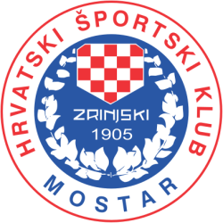
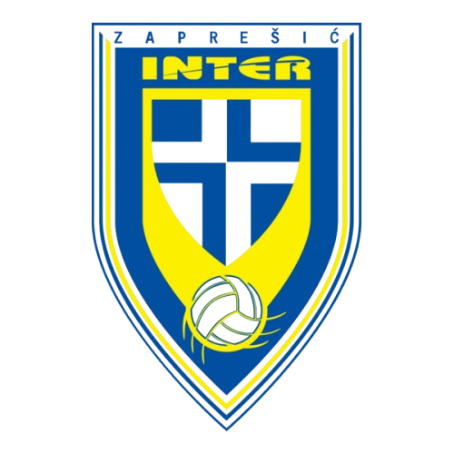
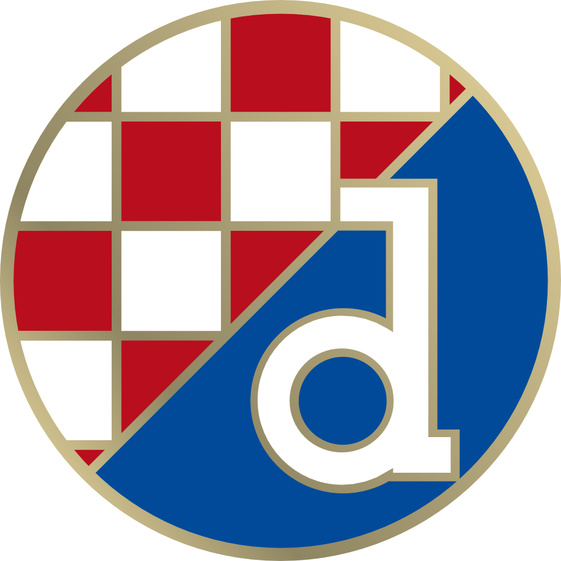
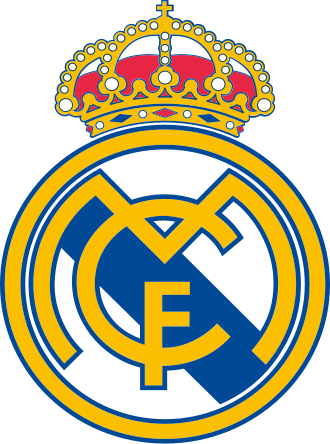
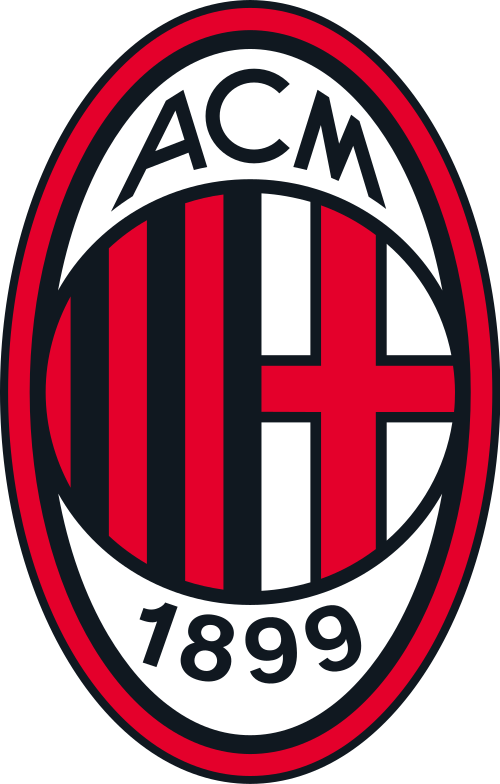
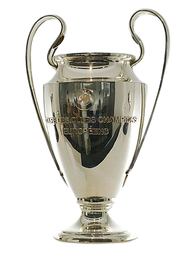
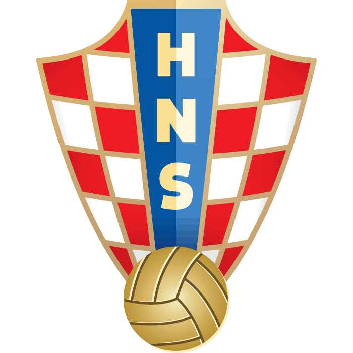
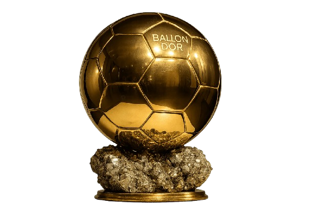

2003 — 2004 · LOAN
Zrinjski Mostar
Mostar, Bosnia and Herzegovina
First senior football at 18, in a league known for its physical edge. He finished the season as its player of the year.
Zadar, Croatia · Born 9 September 1985 · Midfielder
Two decades of setting the tempo. Six European Cups, one Ballon d'Or, and the captain's armband for club and country.
Career
From loan spells in Mostar and Zaprešić to thirteen seasons in Madrid and a new chapter at San Siro. Every stop on the way, in order.

2003 — 2004 · LOAN
Mostar, Bosnia and Herzegovina
First senior football at 18, in a league known for its physical edge. He finished the season as its player of the year.

2004 — 2005 · LOAN
Zaprešić, Croatia
One season in the Croatian top flight, a title race, and the form that brought him back to Zagreb for good.

2005 — 2008
Zagreb, Croatia
The club that signed him as a teenager. Three straight league titles before the move to England.

2008 — 2012
London, England
Four Premier League seasons at White Hart Lane, where he moved into central midfield and took Spurs into the Champions League.

2012 — 2025
Madrid, Spain
Thirteen seasons, six European Cups, four league titles. He left as captain and as the most decorated player in the club's history.
Captain 2024–25
2025 —
Milano, Italy
A first season in Serie A at 40, in the red and black he followed as a boy, wearing number 14.
UEFA Champions League

Six finals, six wins, all in white. No player in the competition's modern era has lifted the trophy more often.
2014
Lisbon
Real Madrid 4–1 Atlético Madrid, after extra time
2016
Milan
Real Madrid 1–1 Atlético Madrid, 5–3 on penalties
2017
Cardiff
Real Madrid 4–1 Juventus
2018
Kyiv
Real Madrid 3–1 Liverpool
2022
Paris
Real Madrid 1–0 Liverpool
2024
London
Real Madrid 2–0 Borussia Dortmund
Captain
He led his country to a World Cup final and ended his time in Madrid wearing the armband at the Bernabéu.

Hrvatska · since 2006
Madrid · 2012 to 2025

Paris · 3 December 2018
The first winner other than Lionel Messi or Cristiano Ronaldo in ten years, in the same year as The Best FIFA Men's Player and the UEFA Men's Player of the Year awards.
6
Champions League titles
4
La Liga titles
28
Trophies with Real Madrid
1
Ballon d'Or
The proposal
Luka, I built this homepage on my own initiative because you are my favourite player in the history of the game. It is a concept, made without any involvement from you or your team.
If you like it, I would be glad to build the full site with your photography, your words and your approval at every step.
Ahmed Adel · Web designer and developer, Egypt
+20 114 427 3375